019 01MOON 22
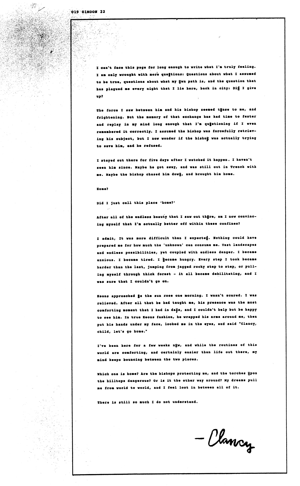
Eu não consigo encarar essa página por tanto tempo para escrever o que realmente estou sentindo. Eu só tenho mais perguntas sobre o que eu presumi ser verdade, perguntas sobre o que meu próprio caminho é, e a questão que me atormenta toda noite que eu me deito aqui, de volta nessa cidade: Eu desisti?
A força que eu vi entre ele e seu bispo parecia tensa pra mim, e assustadora. Mas a lembrança dessa troca deu tempo para apodrecer e repetir na minha mente, tanto tempo que eu estou me perguntando se realmente me lembro direito. Eu presumi que o bispo estava forçadamente recuperando seu sujeito, mas agora me pergunto se o bispo estava na verdade tentando salvar ele, e ele recusou.
Eu fiquei lá fora por cinco dias depois que eu vi isso acontecer. Eu não vi ele desde então. Talvez ele fugiu e ainda estava em Trench comigo. Talvez o bispo perseguiu ele e trouxe ele pra casa.
Casa?
Eu acabei de chamar este lugar de casa?
Depois de toda interminável beleza que eu vi lá fora, agora estou me convencendo que estou melhor dentro destes confins?
Eu admito, foi mais difícil que eu pensei. Nada poderia ter me preparado pra como o "desconhecido" pode me consumir. Grandes paisagens e infinitas possibilidades, porém misturados com perigo interminável. Eu fiquei ansioso. Eu fiquei cansado. Eu fiquei com fome. Cada passo que eu dava ficava mais difícil que o anterior, pulando de pedra em pedra ou entrando em florestas profundas - tudo se tornou debilitante, e eu tinha certeza que não poderia seguir em frente.
Keons se aproximou enquanto o sol nascia uma manhã. Eu não estava assustado. Eu estava aliviado. Depois que tudo que ele me ensinou, a presença dele era o momento mais confortante que eu tive em dias, e eu não pude evitar de ficar feliz em ver ele. No verdadeiro estilo Keons, ele colocou seus braços em volta de mim, então colocou suas mão em baixo da minha cara, olhou nos meus olhos e disse "Clancy, filho, vamos pra casa."
Eu estive aqui por algumas semanas agora, e enquanto as rotinas desse mundo são confortantes, e certamente mais fácil que a vida lá fora, minha mente continua saltando entre os dois lugares.
Qual deles é "casa"? Os bispos estão nos protegendo, e as tochas nas colinas são perigosas? Ou é o contrário? Meus sonhos me levam de mundo a mundo, e eu me sinto perdido entre tudo isso.
Ainda tem tanta coisa que eu não entendo.
- Clancy
17-35.4527.jpg
Essa moon significa a data que o clipe de Chlorine foi lançado (22 de Janeiro de 2019)
Algumas letras estão com "sombras", essas letras soletram "sodeepnedbayou"
O nome do arquivo faz referência ao número atômico (17) e a massa atômica (35,4527) do cloro
018 07MOON 18

Não consigo acreditar no que acabei de ver. Ainda estou tentando entender. Esse tempo todo eu tinha certeza que eu estava completamente sozinho - uma única alma nesse grande mundo desconhecido. Mas alguns dias nesta caminhada, eu olhei pra baixo e vi uma pessoa indo pro mesmo lugar que eu estava indo. Eu entrei em cavernas e fendas, tentando o meu melhor pra ficar escondido, mas ele estava lá fora no aberto, fazendo sua jornada cansativa bem no meio de Trench. Eu estava curioso demais, então, decidi seguir ele. Ele parecia não ser afetado pelo medo do desconhecido - o medo que me congela. Pra ele, o terreno parecia familiar, como se ele já tivesse vindo aqui antes.
Enquanto eu estava perdido na minha curiosidade, eles apareceram. Eu ouvi sobre eles em Dema, mas pra mim as histórias eram mitos. Dez, vinte, e então pareciam ter mil Banditos no topo do penhasco, todos eles olhando pra ele. Ele só parou por um momento pra olhar para os Banditos, e então continuou seu caminho. Sua energia mudou, e eu não tinha certeza se ele estava assustado ou encorajado pela presença sinistra deles.
Eles o avisaram o que estava por vir.
Foi tudo muito rápido. Primeiro vendo a pessoa, então os Banditos, pra agora ver o Bispo vindo montado em um cavalo branco chegando cada vez mais perto.
A pessoa parou, e esperou. Quando o Bispo parou, eu tinha certeza que ele olhou pra cima, diretamente pra mim, então eu me escondi em uma caverna. A presença do Bispo parecia paralizar ele. Ele ficou parado enquanto o Bispo se aproximava, sem forças enquanto as mãos do Bispo se aproximava do seu pescoço. Eu nunca vi um Bispo possuir um poder assim. Keons sempre pareceu gentil e caloroso - esse Bispo, pelo menos aqui fora, parecia algo diferente.
Então eu corri, e eu corri até onde minhas pernas e pulmões alguentaram. Talvez essa carta vai ser a prova que o que eu presenciei não foi um sonho. Um milhão de perguntas correm na minha mente. Eu não sou o único viajando por Trench?
Eu vou ir um pouco mais longe, e talvez eu tenha um momento de descanso hoje a noite. Talvez eu tenha feito um erro saindo. Esse local, entre dois lugares, está começando a parecer como um abismo infinito e sem esperanças. Pelo menos Dema é um lugar que eu conheço, e em momentos como esse, eu sinto muita falta do que eu conheço. Isso tudo vai ser mais difícil que imaginei. Nada aqui fora é familiar. Eu presenciei a presença de outros pela primeira vez hoje, e eu me sinto mais sozinho que sempre. Me protejam.
- Clancy
unalone.gif
Essa carta cita os acontecimentos do clipe de Jumpsuit
018 07MOON 08
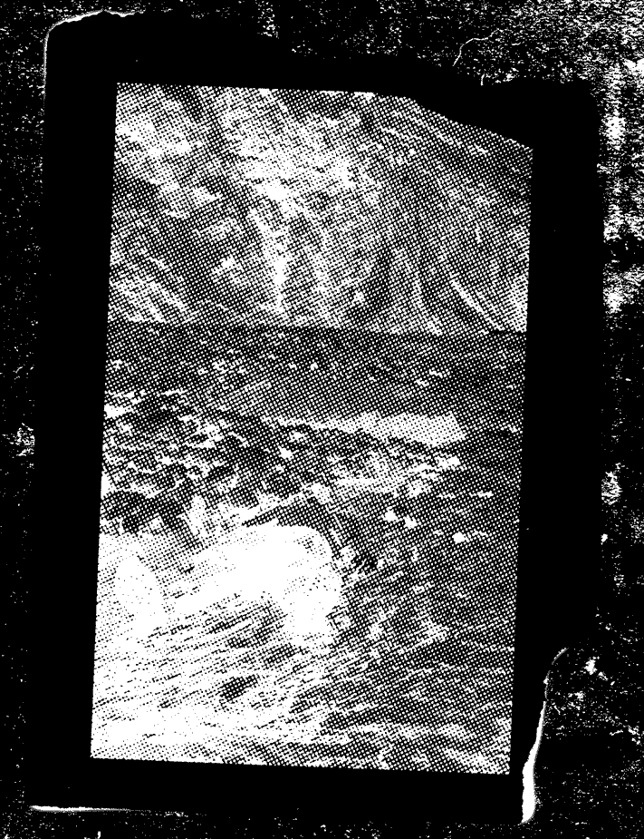
2_1_2.gif
O nome do arquivo faz referência a nova logotipo com barras duplas da banda (||-//)
Essa foto é do Tyler deitado no começo do clipe de Jumpsuit
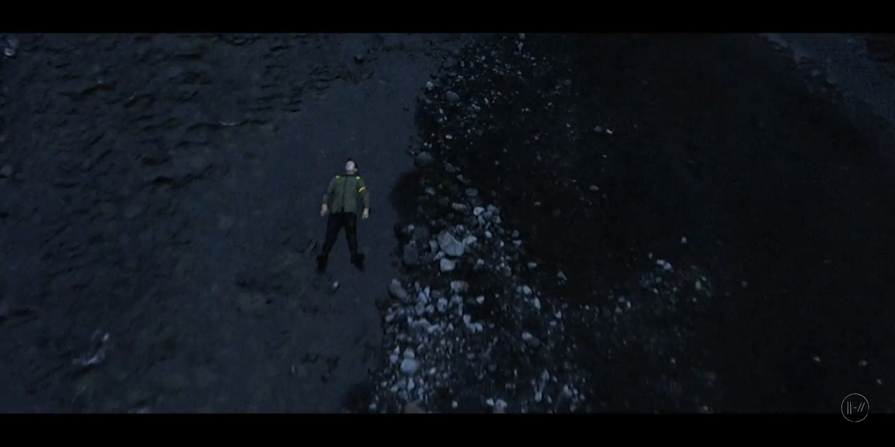
018 07MOON 08
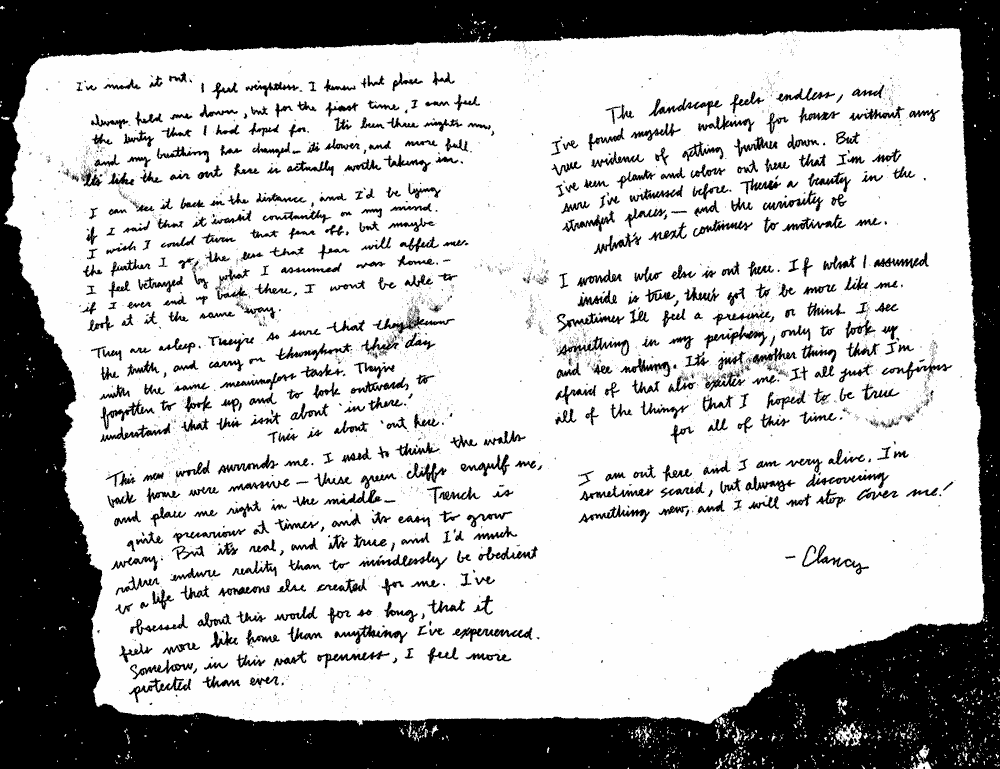
Eu consegui sair.
Eu me sinto leve. Eu sei que aquele lugar sempre me segurou, mas pela primeira vez, eu consigo sentir a beleza que eu sempre esperei. Fazem três noites agora, e minha respiração mudou. Está mais lenta e completa. É como se o ar aqui fora valesse a pena respirar.
Eu posso ver na distância, e eu estaria mentindo se eu dissesse que isso não estava constantemente na minha mente. Eu queria que eu pudesse desligar esse medo, mas talvez quanto mais longe eu for, menos esse medo vai me afetar. Eu me sinto traído pelo que eu assumi ser meu lar - se eu algum dia voltar pra lá, eu não vou ver isso do mesmo jeito.
Eles estão dormindo. Eles têm tanta certeza que eles sabem a verdade, e continuam o dia com as mesmas tarefas sem significado. Eles esqueceram de olhar pra cima, e pra olhar pra fora, esqueceram de entender que isso não é sobre "lá dentro".
Isso é sobre "aqui fora".
Esse novo mundo me cerca. Eu costumava pensar que as paredes de casa eram enormes – esses penhascos verdes me envolvem e me colocam bem no meio – Trench é bem precário as vezes, e é fácil ficar cansado. Mas é real, e é verdade, e eu prefero muito mais encarar a realidade do que cegamente ser obediente à uma vida que alguém criou pra mim. Eu estive obcecado por esse mundo por tanto tempo, que se parece mais um lar do que tudo que experiencei. De algum jeito, nessa aberta vastidão, eu me sinto mais protegido que nunca.
A paisagem parece infinita, e eu me encontrei andando por horas sem nenhuma evidência verdadeira de que eu estava chegando mais perto. Mas eu vi plantas e cores aqui fora que eu não tenho certeza se já vi antes. Tem beleza nos lugares mais estranhos, e a curiosidade do que vem aí continua a me motivar.
Eu me pergunto quem mais está aqui fora. Se o que eu presumi lá dentro é verdade, tem mais gente como eu. As vezes eu vou sentir uma presença, ou pensar que eu vi algo na periferia, só pra perceber que não vi nada. É só outra coisa que eu estou com medo e que também me anima. Tudo só confirma todas as coisas que eu acreditei ser verdade todo esse tempo.
Eu estou aqui fora e eu estou bem vivo. As vezes eu estou assustado, mas sempre descobrindo algo novo, e eu não vou parar. Me proteja!
- Clancy
_note.gif
018 07MOON 06

they_ca_ntseeFCE300.gif
A tradução do nome do arquivo é "eles não conseguem ver FCE300", #FCE300 é um tom de amarelo
018 07MOON 05
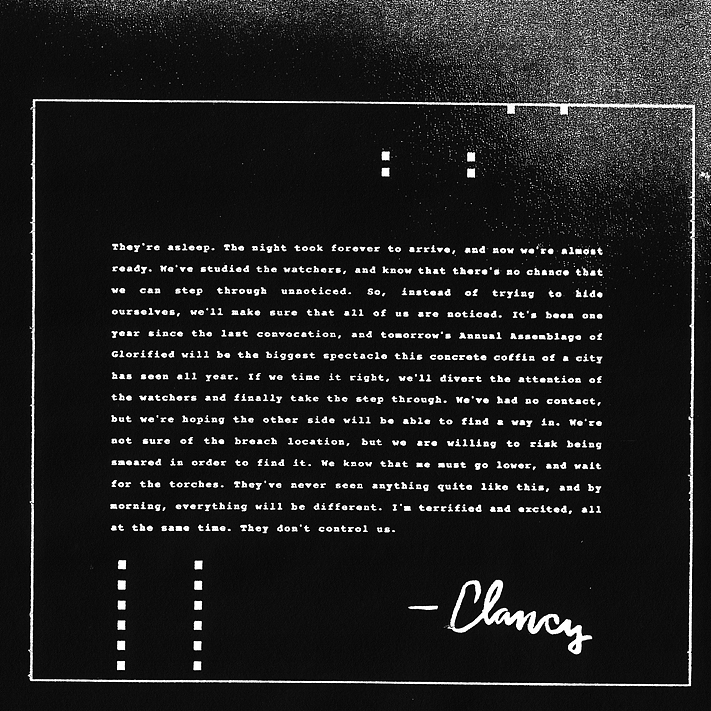
Eles estão dormindo. A noite demorou uma eternidade pra chegar, e agora estamos quase prontos. Nós estudamos os vigias e sabemos que não tem nenhuma chance que nos podemos entrar despercebidos. Então, ao invés de tentar nos esconder, vamos ter certeza que todos de nós vamos ser notados. Faz um ano desde a última convocação, e a Assembléia Anual do Glorificado vai ser o maior espetáculo que esses confins da cidade já viu. Se fizermos no tempo certo, vamos dividir a atenção dos vigias e finalmente seguir em frente. Nós não tivemos contato, mas esperamos que o outro lado encontre um caminho. Não temos certeza do local da fuga, mas estamos dispostos a arriscar sermos manchados em ordem para encontrar. Nós sabemos que deviamos ir mais baixo e esperar pelas tochas. Eles nunca viram algo assim, e pela manhã, tudo vai ser diferente. Estou aterrorizado e animado, tudo ao mesmo tempo. Eles não nos controlam.
- Clancy
_he_a_vy_.jpg
Os quadrados mostram quantas linhas pular até a letra certa, se fizer tudo certo vai conseguir a frase "WAKE UP" ("acorde")
Nessa carta o Clancy diz que no dia seguinte vai fazer um ano desde a última convocação, o dia seguinte é 6 de Julho de 2018, um ano depois do hiato começar
018 07MOON 05

_o__ut_.gif
Essa é a visão de Dema, vista do mesmo lugar que começa o clipe de "Nico and the Niners"
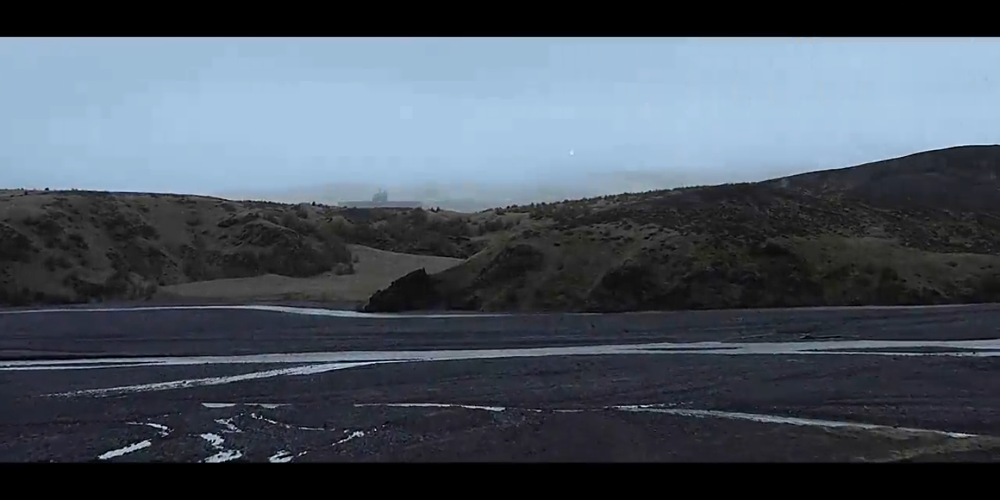
018 07MOON 01
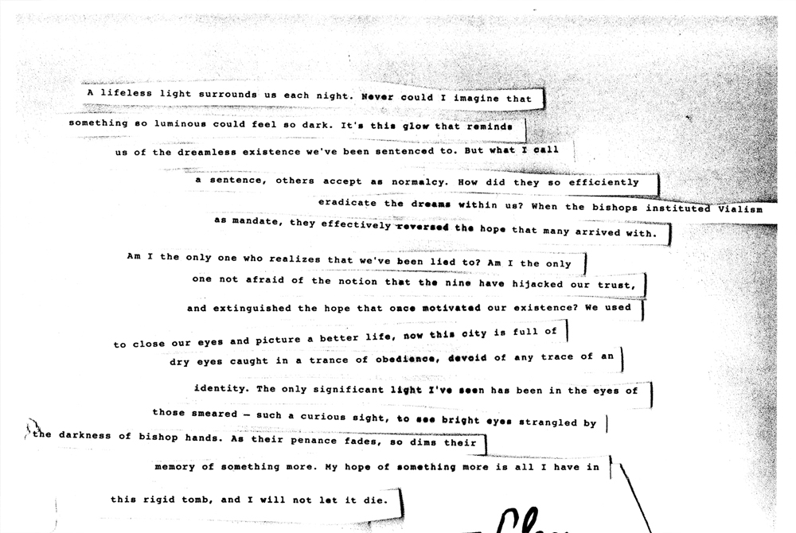
Uma luz sem vida nos cerca toda noite. Eu nunca imaginei que algo tão brilhante poderia parecer tão sombrio. É esse brilho que nos lembra da existência sem sonhos que nós fomos sentenciados. Mas o que eu chamo de sentença, outros aceitam como normalidade. Como eles erradicaram os sonhos dentro de nós tão eficientemente? Quando os bispos instituiram Vialismo como mandato, eles efetivamente reverteram a esperança que muitos tinham.
Eu sou o único que percebe que mentiram pra nós? Eu sou o único que não está com medo da noção que os nove roubaram nossa confiança, e extinguiram a esperança que uma vez motivou nossa existência? Nos costumávamos fechar nossos olhos e imaginar uma vida melhor, agora essa cidade está cheia de olhos secos pegos em um transe de obediência, desprovido de qualquer traço de identidade. A única luz significante que eu vi estava nos olhos daqueles que foram manchados - uma vista curiosa, ver olhos brilhantes estrangulados pela escuridão das mãos dos bispos. Conforme seu castigo desaparece, desaparece também suas memórias de algo mais. Minha esperança de algo mais é tudo que eu tenho nessa tumba rígida e eu não vou deixar isso morrer.
- Clancy
_e_sr__eve_r_.jpg
Ao contrário, o nome do arquivo fica _r_eve__rs_e_
Quando a é colocada em cima dessa foto fica assim: 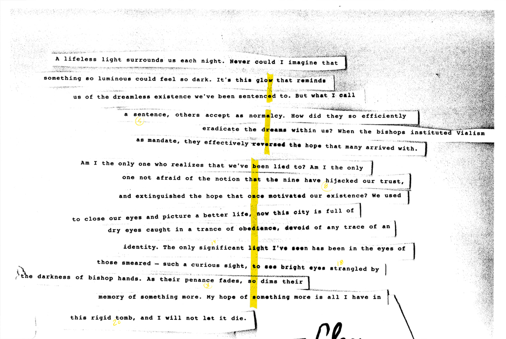 As linhas amarelas formam a frase "we are banditos" e as marcações formam a palavra "trench" .
018 07MOON 01

i.gif
Esse é o mesmo abutre que aparece no clipe de Levitate
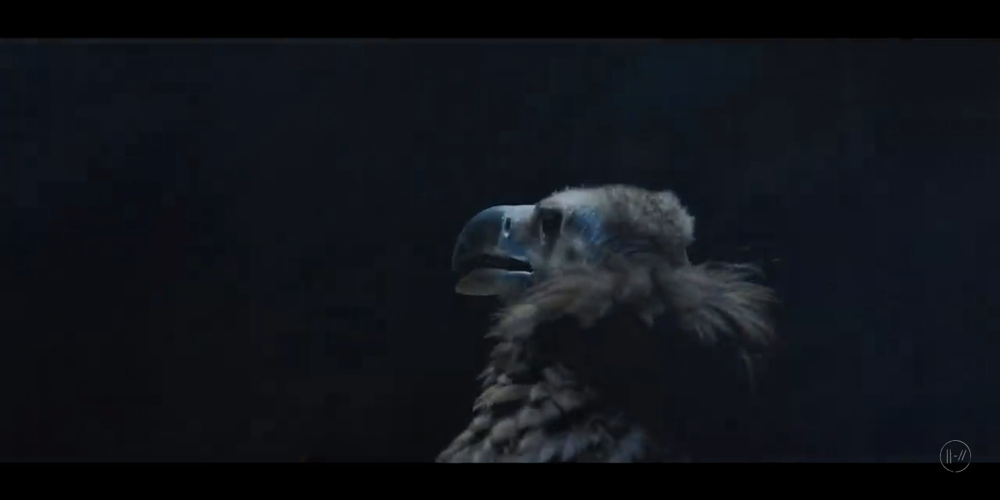
017 07MOON 17
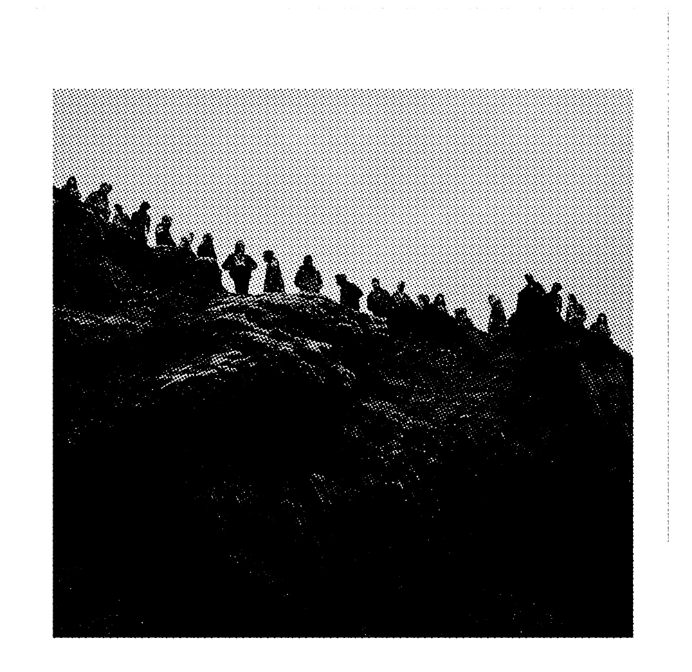
__n_ot_myo_nly_fri_en d
2018_514_3_8.jpg
Quando troca os números do nome do arquivo pelas letras do alfabeto fica "TR_EN_C_H", o nome do album
Essa foto é dos banditos no clipe de Jumpsuit
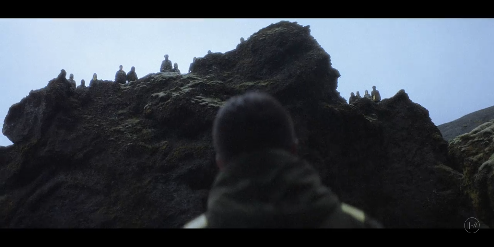 Um audio foi encontrado nesse site , esse é o audio:
No audio da pra ouvir "so deep ned bayou", mas, se inverter esse audio fica assim:
Assim da pra ouvir "we are banditos".
017 07MOON 16

3lurr.gif
As letras no topo formam "UNSTILLIDONTCKNOWOHISNREALINAMECDOOU?", se tirar o "NICO NICO" do meio disso fica "USTILLDONTKNOWHISREALNAMEDOU?" ("Você ainda não sabe o nome real dele, né?")
017 07MOON 07
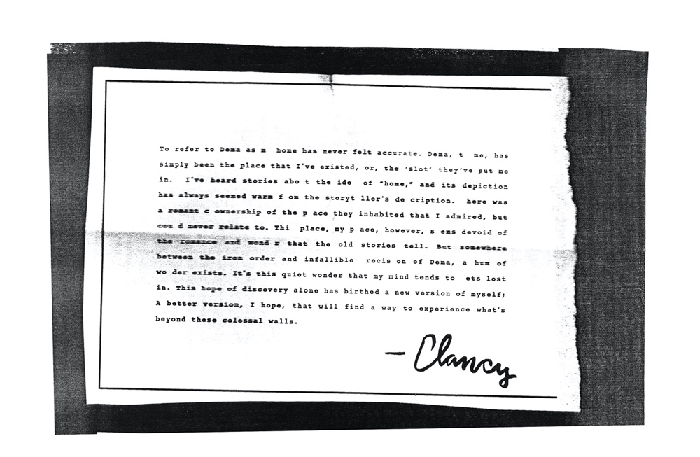
Se referir à Dema como minha casa nunca pareceu certo. Dema, pra mim, sempre foi o lugar que eu simplesmente existi, ou, o lugar que eles me colocaram. Eu ouvi histórias sobre a ideia de "casa", e a representação sempre pareceu calorosa pela descrição dos contadores de histórias. Tinha uma propriedade romântica no lugar que eles habitaram que eu admirava, mas nunca poderia me relacionar. Esse lugar, meu lugar, contudo, parece desprovido do romance e maravilha que as velhas histórias contam. Mas algum lugar entre a ordem de ferro e a infalível precisão de Dema, um murmuro de maravilha existe. É nessa maravilha silenciosa que minha mente tende a se perder, essa esperança de descoberta deu vida a uma nova versão de mim mesmo; Uma versão melhor, eu espero, que vai encontrar um jeito de experienciar o que está além destas paredes colossais.
- Clancy
017_07MOON_07.jpg
Essa moon significa a data em que o hiato começou (7 de Julho de 2017)
Na carta tem várias letras faltando, se juntar todas elas formam a frase "you are still sleeping" ("você ainda está dormindo")
017 02MOON 12
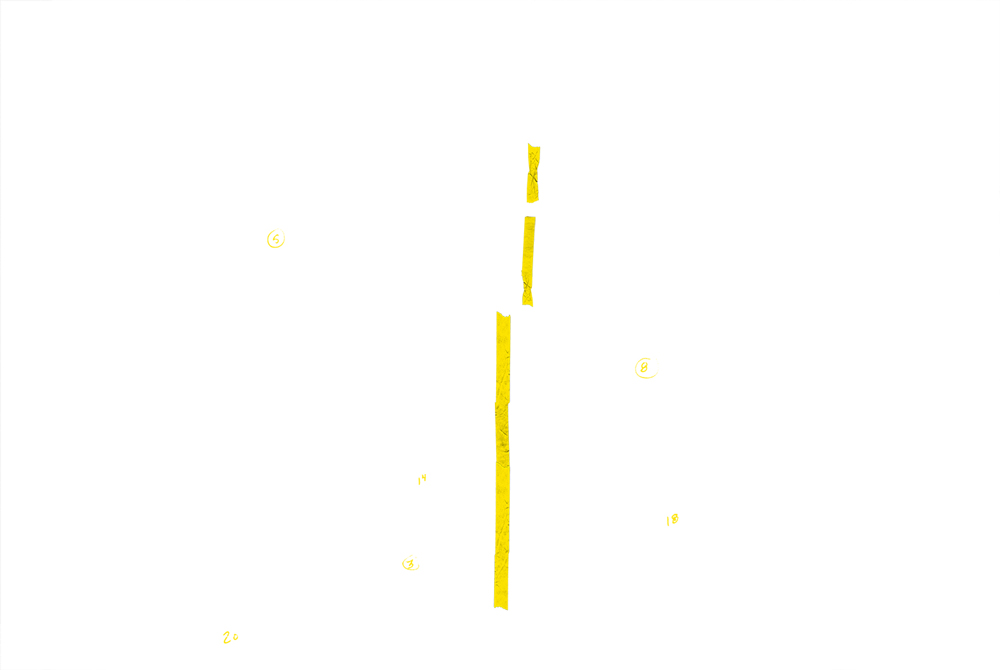
_.jpg
Essa moon significa a data do Grammy's em que tøp ganharam o Best Pop Duo/Group (12 de Junho de 2017)
Essa foto combina com a
013 01MOON 08

sev_ering__tiez
gEt out. the compAss lies. they don't control you. get out. the compaSs lies. They don't control you. get out. the compass lIeS. they don't control yoU.get out. the comPass lies. they don't control you.
gEt out. the compAss lies. they don't control you. get out. the compaSs lies. They don't control you. get out. the compass lIeS. they don't control yoU.get out. the comPass lies. they don't control you.
_ti_su_p.png
A tradução de"severing ties" é "rompendo laços"
O texto é "Saia. A bússola mente. Eles não te controlam. Saia. A bússola mente. Eles não te controlam. Saia. A bússola mente. Eles não te controlam. Saia. A bússola mente. Eles não te controlam."
As letras em maiúsculo (no texto original) formam EASTISUP
Essa moon significa o lançamento do Vessel (8 de janeiro de 2013)
Uma versão antiga dessa foto mostrava ela completa
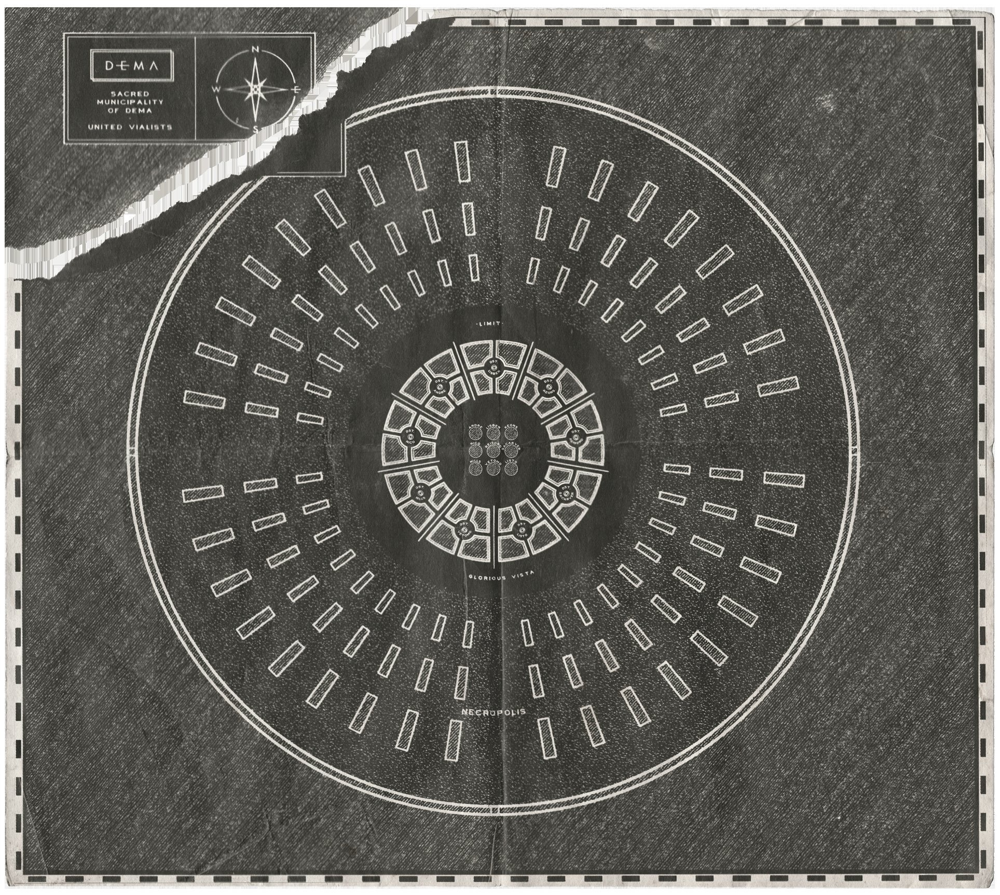
Nessa versão tem uma bússola com o simbolo do east is up , uma logo de DEMA e em baixo dizia "MUNICÍPIO SAGRADO DE DEMA - VIALISTAS UNIDOS"
No centro da foto tem 9 circulos, cada um representando um bispo, o nome deles são:
Andre, Lisden, Keons
Nico, Reisdro, Sacarver
Nills, Vetomo, Listo
011 07MOON 08
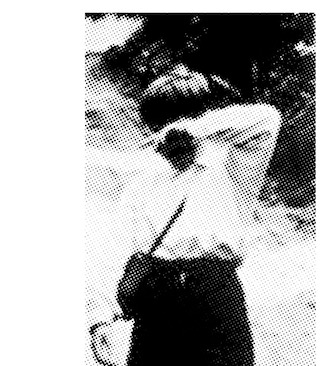
se__elf.jpg
Essa moon significa o lançamento do Regional at Best (8 de Julho de 2011)
Essa foto é do matemático André Weil que era parte do "grupo Bourbaki", esse grupo introduziu o simbolo matemático "∅"
Esse grupo atuava pelo pseudônimo "Nicolas Bourbaki"
009 12MOON 29
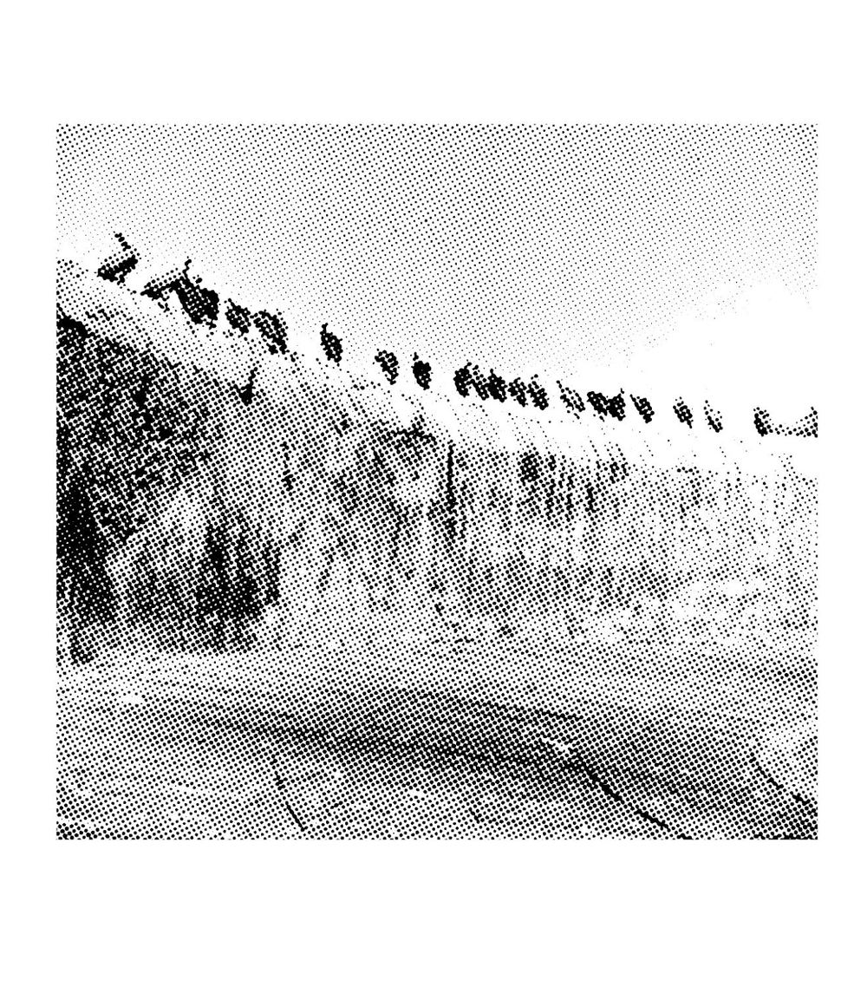
d_e_ath__eat_E_rz
unnamed-(1).jpg
A tradução de "death eaters" é "comensais da morte"
Essa moon significa o lançamento do self-titled (29 de Dezembro de 2009)
A foto mostra varios abutres em um muro.
Em Trench, o abutre é um símbolo de responsabilidade para transformar a morte em vida, os banditos acreditam que devem aprender com o que perderam, e se comprometerem a viver
988 12MOON 01
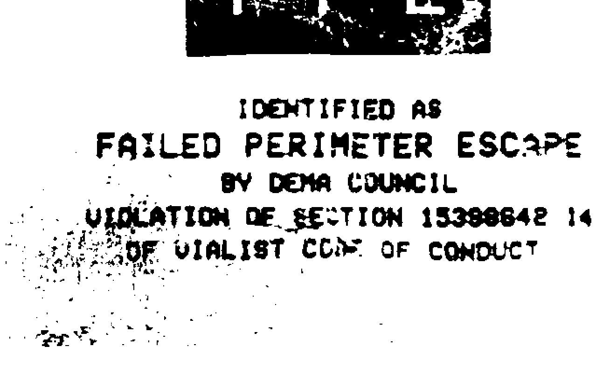
IDENTIFICADO COMO
FALHA NO ESCAPE DO PERÍMETRO
PELO CONCELHO DE DEMA
VIOLAÇÃO DA SEÇÃO 15398642 14
DO CODIGO DE CONDUTA VIALISTA
ba_dge.jpg
Essa moon significa 1 de Dezembro de 1988, o aniversário do Tyler.
Essa é a punição que os bispos dão pra quem tenta fugir de Dema, o distintivo FPE, significa Failed Perimeter Escape mas os banditos usam como the Few, the Proud and the Emotional (Fairly Local)
988 06MOON 18
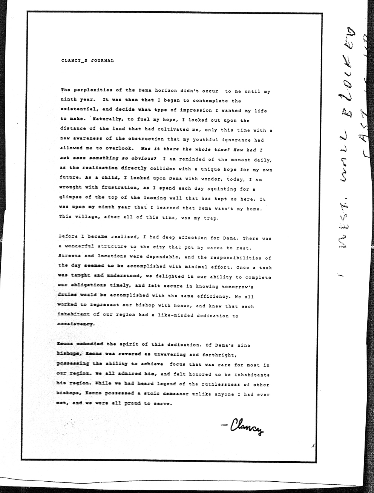
DIÁRIO_DO CLANCY
As perplexidades do horizonte de Dema não apareceram pra mim até meu nono ano. Foi quando eu comecei a contemplar o existencial, e decidi que tipo de impressão eu queria que minha vida fizesse. Naturalmente, para alimentar minha esperança, eu olhei para a distância da ilha que me cultivou, mas dessa vez com uma nova consciência da obstrução que minha jovem ignorância me deixou ignorar. Estava lá o tempo todo? Como eu não vi algo tão óbvio? Eu me lembro do momento diariamente, como a idealização diretamente colide com uma única esperança para o meu próprio futuro. Como uma criança, eu olhei pra Dema com admiração, hoje, eu sou moldado com frustração, enquanto gasto cada dia apertando os olhos para um vislumbre do topo da parede enorme que nos deixam aqui. Foi no meu nono ano que Dema não era minha casa. Esse vilarejo, depois de todo esse tempo, era minha armadilha.
Antes de eu perceber, eu tinha uma grande afeição por Dema. Tinha uma maravilhosa estrutura pra cidade que coloca meus cuidados para descansar. Estradas e locais eram confiáveis, e as resposabilidades do dia pareciam ser feitos com o mínimo esforço. Assim que uma tarefa era ensinada e entendida, nós deleitamos nas nossas habilidades para completar nossas obrigações em tempo, e nos sentiamos seguros em saber que as tarefas de amanhã seriam feitas com a mesma eficiência. Todos nós trabalhamos pra representar nossos bispos com honra, e sabiamos que cada habitante da nossa região tinha uma semelhante dedicação á estabilidade.
Keons incorporava o espírito dessa dedicação. Dos nove bispos de Dema, Keons era reverenciado como inabalável e honesto, possuindo a habilidade de conquistar foco que ere raro para muitos na nossa região. Todos nós admiravamos ele, e nos sentiamos honrados de ser habitantes na região dele. Enquanto escutamos uma multidão falar sobre a crueldade dos outros bispos, Keons possuia um comportamento estóico diferente de qualquer outra pessoa que ja conheci, e nós estávamos todos orgulhosos de servir.
- Clancy
cla_ncy-988-06MOON_18_-1.jpg
A moon dessa carta significa 18 de Junho de 1988, que é o aniversário do Josh.
"Parede do oeste bloqueada, leste é pra cima" tá escrito de caneta no lado da folha.